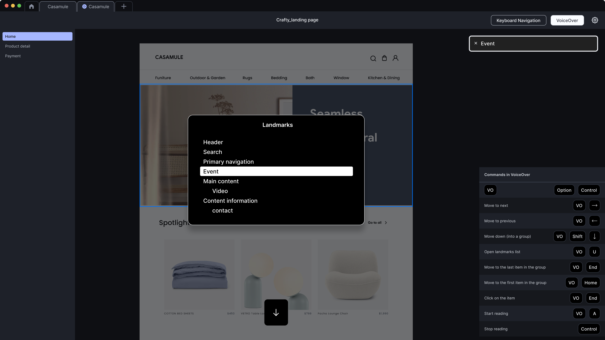
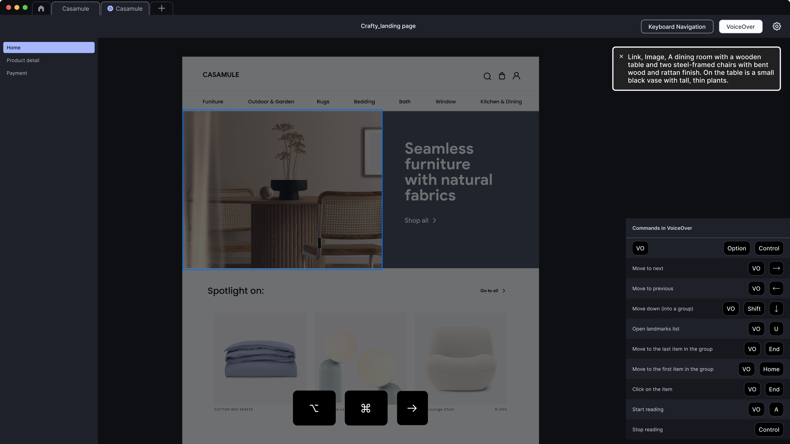

Problem
Designs pass annotation review on paper but fail in interaction. Keyboard traps emerge in dynamic UI (a modal whose close button isn’t focusable from inside the modal). Focus rings get hidden by overlays. Screen-reader announcement order mangles meaning when DOM order doesn’t match visual order. The design-time annotation audit doesn’t surface these, only an interaction pass does.
Engineers can run accessibility tooling (axe, WAVE), but the failures that matter most happen before code: in the design’s expected interaction model. A designer-runnable check during the design phase catches them earliest and cheapest.
Pattern
Three checks, run on the prototyped or built design before handoff. Document the pass/fail of each in the design review.
- Keyboard-only check. Unplug the mouse. Tab through the page. Verify every interactive element is reachable. Verify the focus ring is visible at every step (3:1 minimum contrast against the page surface). Verify Esc closes every dismissable surface (modal, menu, tooltip). Verify focus returns to the invoking element after a modal closes.
- Screen-reader pass. Turn on VoiceOver (Cmd+F5 on macOS) or NVDA (free, Windows). Navigate by heading (Ctrl-Opt-Cmd-H / H), by landmark (Ctrl-Opt-U / D), and by tab. Verify announcement order matches the intended reading order. Verify image alt text reads correctly. Verify form labels are associated.
- Reflow check. Zoom the browser to 200%. Verify the page reflows to a single column without horizontal scroll. Verify no text gets clipped. Verify interactive elements stay reachable.
Run the same three checks in light mode and dark mode, contrast and focus-ring visibility can differ.
Visual examples


Process
This is a process pattern, not a code pattern. The deliverable is a completed checklist attached to the design handoff.
1. Keyboard-only
- [ ] All interactive elements reachable via Tab
- [ ] Focus ring visible at every step (3:1+ contrast)
- [ ] Esc closes every modal, menu, tooltip
- [ ] Focus returns to invoking element after modal close
- [ ] No keyboard traps (focus can always move forward and backward)
2. Screen reader (VoiceOver Mac / NVDA Win)
- [ ] Heading order announces correctly (H1 → H2 → H3, no skips)
- [ ] Landmarks announced (banner / nav / main / aside / contentinfo)
- [ ] Image alt text matches the three-state pattern (#08)
- [ ] Form labels associated; required state announced
- [ ] Announcement order matches reading order
3. Reflow at 200% zoom
- [ ] Single column, no horizontal scroll
- [ ] No text clipped
- [ ] Interactive elements still reachableAnnotation
Attach the completed checklist to the design handoff (Figma comment, ticket, or design review doc). Note any known failures with the workaround or the engineering note.
Validated: 2026-MM-DD
Tools: VoiceOver 13.0 (macOS), Chrome 130, light + dark
Failures: none / [list]
Notes: Modal close behavior coordinated with team; see ticket #...WCAG mapping
- 2.1.1 Keyboard (opens in new tab) A the keyboard-only check
- 4.1.2 Name, Role, Value (opens in new tab) A the screen-reader pass
- 1.4.10 Reflow (opens in new tab) AA the 200% reflow check
Related patterns
- Focus order & keyboard navigation (#06), the annotated focus path is what this validates
- Structure landmarks (#07), the screen-reader pass verifies landmarks announce correctly
- Alt text annotation (#08), image alt is verified in the screen-reader pass